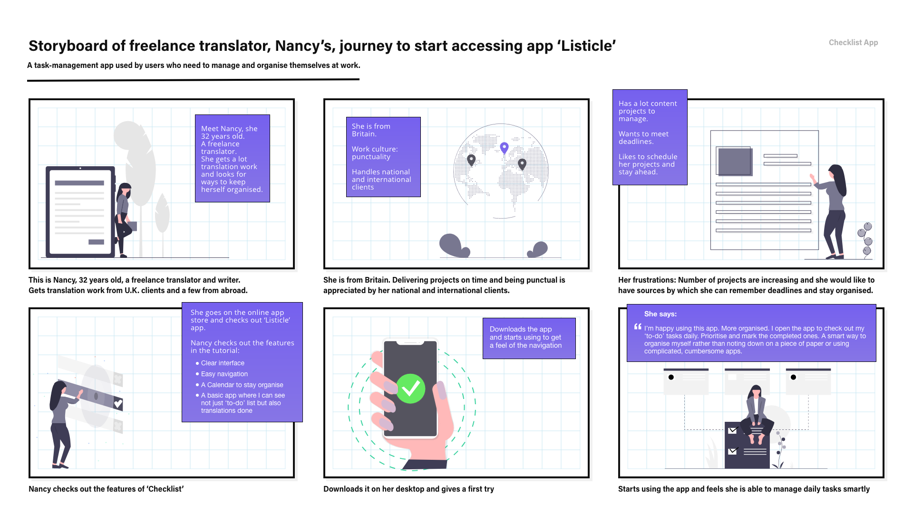

Application Development and Design
Overview and the Goal:
My next project was to plan and design a desktop application for MacOS, Windows and Linux with simple but clear features for the user to interact. Such applications are called “utility apps”.
The end product is a cross platform application and developed with Electron.
GOAL:
I chose to design a To-do List called ‘Checklist’, coded in the Svelte framework, built with Electron.
A task-management app used by users who need to manage and organise themselves at work. These users can belong to different professions, any nationality, different age-groups.
However, they have one goal- want to sort cumbersome tasks, and keep a follow-up of their projects, electronically, with a personalised to-do list.
MY ROLE IN THE TEAM:
This project was managed individually. So, I played a role of UX researcher, designer, and coder.
Process:
I love to experiment with different UX methods to solve different design challenges.
This time I chose Agile Approach. This method is often used in the software development of the app that involves a continuous process of defining an app idea, designing, developing and deploying.

1. Define:
To rapidly define my user-personas, their needs and pain-points, I sent a minimum-coded app along with an online questionnaire.
Before this I carried a ‘user-analysis poll’ on 10 people asking which app they would like to have the most- grocery app, to-do list, time-tracker app with a to-do list. 40% of votes went for a ‘to-do list’.
MINIMUM VIABLE PRODUCT (MVP) DURING DEFINING PHASE:
A minimum viable product (MVP) is a version of a product with just enough features to satisfy early customers and provide feedback for future product development.
Based on my agile approach method, I picked up the idea of MVP, created a website of to-do list with minimum code. Sent to the users during the research phase.
Wondering why did I opt to send a minimum viable product to user-personas? Well, yes! This is what I was able to extract:
- Set a user's focus straight to nature of the app
- They quickly got a feel of the app without their thoughts going astray
- They gave their inputs on features and interactions with more clarity

Feedback from user-testers on the positives of the app:
- Like the simply designed interface
- Envision the app as solving their daily problem at work of organising themselves
Features and interactions users like to see in the app:
- Would like to have a calendar to better manage and remember tasks
- A softer purple color of the user-interface
- Would like to have a feature where they can mark tasks as 'complete'
- Want to see ‘default’ examples to figure out how to use the app
USER-PERSONAS AND ANALYSIS:

The users of the app are those who work in an office or freelance, have lots of projects and clients to take care. They are looking for digital ways to organise themselves. They belong to different professions, and can be of any nationality. But all of them have one purpose- looking for task management apps to organise their work and projects.
My Thoughts on Visual interface
I chose Quicksand as typography. The rounded terminals of the font have geometric shapes as its foundations. I used this font for main headings and titles for display purposes. The background image in the app contains circles that gives a sense of cool and soft-effect, alongwith the font. The circles in the image support the font’s rounded terminals in subtle ways. Montserrat font as a combination blends well with the primary Quicksand font.
Storyboard
After creating user-personas and understanding their story and their needs before starting designing any structure, I created a visual story to empathise with my users and design a product that works for them.
2. Design and Develop:
The designing stage involved creating lo-fi and mid-fi wireframes out of the sketches. While the designing was going on, I resent the version for user-testing.


3. Deploy:
While I was coding the app and from time to time recieving feedback from the users, I learnt that I had to change the name of the app. My users were able to relate more 'Checklist' than 'Listicle' name. So, the name got changed.
FINAL VERSION
My Learnings:
Agile process: Learnt practical approach of software development of products with agile method.
Built the ‘Minimum Viable Product’ version of the app to collect feedback from the users with minumum coding.
Experience the product yourself here!
Here's the github link